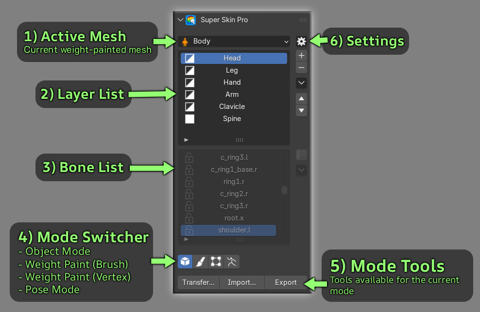
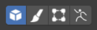

Interface Overview¶

1) Active Bind Mesh¶
Shows the currently selected mesh. Click it to open a popup with the option to Bake Layer Data to Blender Native.
2) Layer List¶
Displays all skin weight layers. You can add, delete, reorder, duplicate, merge, and toggle the visibility of each layer. Watch how to get started with layers or why you should use layers.
- Toggle Layer: Click the icon in front of a layer to turn it on or off.
- Rename Layer: Double-click the layer name to rename it.
3) Bone List¶
Displays the active deform bones. Watch basic bone selection in Weight Paint Mode or read how to select bones in the viewport.
- Lock / Unlock: Click the lock icon in front of any bone to prevent weight bleeding.
- Focus Viewport: Double-click a bone to focus on it in the 3D viewport.
- Filter Influenced Bones: Toggle via the button in the right menu to display only bones with weights.
Layer List & Bone List Shortcuts
Both the bone and layer lists support the following shortcuts:
- Ctrl + Click: Add or remove items individually
- Shift + Click: Select a range of items
- Ctrl + A or Alt + Shift + Click: Select all items in the list
- Ctrl + I: Invert selection
4) Mode Switcher¶

Switches between Object Mode, Brush Paint Mode, Vertex Selection Mode and Pose Mode.